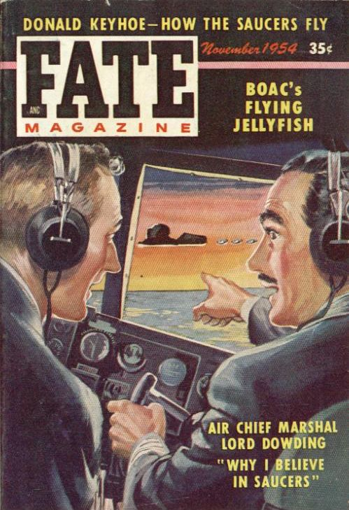

Couverture du n° de Fate de ce mois-ci sur le cas de l'observation de Goose Bay et d'une
déclaration de Hugh Dowding : Pourquoi je crois aux soucoupes

Début de la guerre d'Algérie.
À Poggio d'Ambra (Italie), MmeLotti Ddainelli (40 ans), se rend au cimetière quand elle aperçoit tout à coup un objet
ayant la forme de 2 cônes accolés par la base, posé dans un endroit herbeux. On peut distinguer 2 petits sièges
à l'intérieur du cône inférieur. De derrière l'objet apparaissent 2 nains mesurant 1 m, portant des combinaisons
grises et des casques rougeâtres s'exprimant dans une langue qu'elle ne pouvait comprendre, avec des sourires
qui laissaient entrevoir leurs petites dents blanches, ils prennent un pot de fleurs au témoin et s'envolèrent.
À Plagiari (Grèce), selon vembos.gr et
le livre de Sokratis Aikaterinidis, Exogiina Onta stin Ellada (vol. 1), de nombreux habitants
du village de Plagiari, près de Giannitsa, dont le prêtre local Nikolaos Exarchos, voient pendant 2 à 3 minutes
une « grande soucoupe volante » émettre sans cesse de vifs éclairs lumineux. GRUFON y voit un météore ou une
boule de feu.
Hellenic
UFO Database, Volume I, GRUFON, , fiche GR_0604.
A Cremona (Italie), 2 étudiants, Pietro Alberini et
Pericle Sacchi, sont à la chasse quand ils aperçoivent 1 nain de 1 m de taille, avec une tête en caoutchouc
et dont le visage est relié par un tube flexible à un réservoir cylindrique qu'il porte sur son dos. Lorsqu'ils
s'approchent de lui, l'être s'enveloppa dans un nuage bleuâtre. Les témoins s'enfuient.
À Pyrgos (Grèce), selon le récit du
témoin M. Theodoratos à Nikolaos Lampaounas, meunier, et au lieutenant Charalambos Antypas du service de
recrutement, il observe vers 6 h, de chez lui près de l'hôpital municipal, un objet lumineux de forme indéterminée à
l'horizon, d'un éclat aveuglant, d'une taille apparente voisine de celle de la Lune. Il file à vitesse vertigineuse
de l'ouest vers le sud et disparaît en quelques secondes vers la mer Ionienne ; une sorte de queue lumineuse
s'éteint peu avant. L'agent maritime Dionysios Giannatos, levé à 5 h 50 pour Katakolo, est terrifié par un éclair
aveuglant qui illumine sa chambre, mais le ciel est parfaitement dégagé. Le sergent Stefanatos, du service de
sûreté, remarque vers 6 h un éclair inhabituel en direction de Katakolo, qu'il prend d'abord pour un projecteur de
bateau ; il disparaît vers la mer après quelques secondes. Source : Sokratis Aikaterinidis, Exogiina
onta stin Ellada, vol. 1, p. 170. GRUFON y voit un météorite.
Hellenic
UFO Database, Volume I, GRUFON, , fiche GR_0035.
Un C-46 de la compagnie brésilienne Varig qui effectue un vol de Porto Alegre à
São
Paulo rencontre un objet inhabituel. Le pilote et le co-pilote aperçoivent une lumière rouge qui fonce sur eux.
Soudain, l'objet semble se déplacer selon un arc de cercle de 45° et grossit à vue d'œil. L'intérieur de l'avion
sent le caoutchoux brûlé. Une fois l'objet disparu, le pilote et son second constatent que le radiogoniomètre, le
générateur et le poste émetteur sont endommagés.
A La-Roche-en-Breuil (France), Raymond R. voit 1 engin
faisant un bruit de gros transformateur et émettant une lumière orange, posé dans un pâturage. A côté se trouvent 3
hommes en combinaison sombre, l'un tenait une sorte de boîte qui émettait un rayon de lumière de 3 m de long,
les 2 autres tenaient des objets qui ressemblaient à des armes. Un autre témoin sent des picotements sur le visage
alors qu'il s'enfuit en courant. 4 photographies de la scène sont prises. Traces, une substance blanchâtre et un
cercle de 3 m de diamètre où le sol avait l'apparence de la cendre.
À Volos (Grèce), à 22 h 45, deux
témoins voient un disque argenté tourner très vite autour de la Lune puis exploser vers l'est. L'explosion forme un
nuage argenté qui couvre la Lune, avec un bruit sourd, selon le journal Eleftheria. GRUFON y voit
un météore ou une boule de feu.
Hellenic
UFO Database, Volume I, GRUFON, , fiche GR_1003.
À Prevedos, Achaïe (Grèce), selon le
journal Athinaiki du 9 novembre 1954, quatre chasseurs de Patras voient dimanche matin une soucoupe
volante au-dessus du village de Prevedos, à 20 km de Patras. Au lieu-dit Chani Kourlampa, M. Politikos voit un point
lumineux plus petit que la Lune, alors que celle-ci est déjà couchée. L'objet émet un énorme éclair qui éclaire les
lieux comme en plein jour et disparaît à une vitesse vertigineuse vers l'Érymanthe. GRUFON y voit un météore ou une
boule de feu.
Hellenic
UFO Database, Volume I, GRUFON, , fiche GR_0920.
À Chani Kourlampa, Patras (Grèce),
selon le journal Neologos Patron du 9 novembre 1954, des témoins voient à 4 h 45, dans un ciel
dégagé, un point lumineux plus petit que la Lune. L'objet traverse le ciel très rapidement, émet un énorme éclair
qui éclaire tout comme en plein jour, développe une queue rosâtre et se dirige vers l'Érymanthe. Les témoins
écartent un météorite à cause de l'intensité de l'éclair. GRUFON y voit un phénomène naturel, probablement un gros
météore qui a explosé en fragments.
Hellenic
UFO Database, Volume I, GRUFON, , fiche GR_0967.
À Golfe Pagasétique (Grèce), selon le
journal Akropolis (29 novembre 1954), l'infirmier N. Diamantis et le commerçant A. Giaprakis
observent à 22 h 30 une soucoupe volante argentée, plus petite que la pleine lune, au-dessus du golfe. Elle tourne
très rapidement, explose avec un bruit « sourd » et crée un nuage brillant qui illumine tout le ciel. GRUFON y voit
un météore ou une boule de feu.
Hellenic
UFO Database, Volume I, GRUFON, , fiche GR_0584.
L'Aurore du 17, titrant sur La psychose collective des soucoupes volantes
A Voussac (France), en forêt de Vacheresse, des
personnes dignes de foi voient une sphère lumineuse atterrir à la lisière de la forêt et devenir alors sombre.
Le matin suivant, une enquête fera découvrir qu'à l'intérieur d'une zone de 4 à 5 m de diamètre il n'y avait pas
de feuille alors que le sol en est jonché partout ailleurs. La terre semble avoir été retournée.
A La Tessoualle (France), André Chaillou sent des picotements dans ses mains malgré ses gants lorsqu'un
disque de couleur bleue arrive près de son vélomoteur dont le circuit d'allumage a alors une défaillance. Il
reste incapable de bouger et d'articuler une parole pendant plusieurs minutes. Il redémarre aussitôt que la
lumière bleue s'éteint, et se dirige vers elle lorsqu'elle réapparaît 200 m plus loin, il voit l'objet, un cône
d'une taille de 5,5 m, s'élever à la verticale avec un léger siflement puis voler horizontalement vers le nord
Combat, 23 novembreParis-Presse, 24 novembre 1954.
À Komotini (Grèce), selon le journal
Eleftheria, un disque lumineux volant est vu au-dessus de Komotini et disparaît après avoir projeté
trois particules lumineuses en forme de cigare. GRUFON y voit un phénomène naturel, météore ou boule de feu.
Hellenic
UFO Database, Volume I, GRUFON, , fiche GR_0859.
À Aizenay (Vendée), malgré un épais brouillard, de
nombreux habitants sont intrigués par les évolutions d'un phénomène mystérieux lançant des lueurs tantôt jaunes,
tantôt d'un rouge vif La Vendée
Libre, 14 novembre 1954 < Barthel, Gérard & Brucker, Jacques: La
Grande Peur Martienne, Nouvelles éditions Rationalistes, 1979, pp. 132-133.
A La Roche-sur-Yon (Vendée), MmeAlbert (employée à -- La Ménagère -- chez M. Morillon) se rend chez le coiffeur, lorsqu'en passant rue Sadi-Carnot, elle aperçoit 1
grosse boule lumineuse de toutes les couleurs et semblant passer à très haute altitude à la vitesse de l'éclair.
Elle l'aperçoit au-dessus de la maison de MmeLarmanjat. Elle se dirige
vers la place circulaire. Le phénomène ne fait aucun bruit et ne laisse aucune trace de fumée derrière lui La Vendée Libre, 14 novembre 1954 < Barthel, G. & Brucker, J.:
La Grande Peur Martienne, Nouvelles éditions Rationalistes, 1979, pp. 132-133.
Aux Sables d'Olonne (Vendée), plusieurs habitants
aperçoivent un phénomène volant de la forme d'un cigare, duquel émanent des nappes de différentes couleurs La Vendée Libre, 14 novembre 1954 < Barthel, G. & Brucker, J.: La
Grande Peur Martienne, Nouvelles éditions Rationalistes, 1979, pp. 132-133.
À Plagiari, Giannitsa (Grèce), selon le
journal Tachydromos du 13 novembre 1954, des habitants de Plagiari voient pendant deux à trois
minutes une soucoupe volante lumineuse aux éclairs intenses. GRUFON y voit une météorite ou une boule de feu.
Hellenic
UFO Database, Volume I, GRUFON, , fiche GR_0670.
À Faliro (Grèce), d'après le
livre de Sokratis Aikaterinidis, Exogiina Onta stin Ellada (vol. 1), Nikos Stefanopoulos
rapporte qu'à 6 h 20, au volant entre Faliro et Athènes, il voit en direction d'Éleusis un OVNI lumineux qui
disparaît peu après. GRUFON y voit très probablement un météore, aucun comportement extrême n'étant signalé.
Hellenic
UFO Database, Volume I, GRUFON, , fiche GR_0497.
À Place Kaningos, Athènes
(Grèce), selon le journal Neologos Patron (13 novembre 1954), une foule voit dans le
ciel, à 10 000 m d'altitude, un objet lumineux rond qui reste immobile cinq minutes puis disparaît en s'élevant.
Les témoins distinguent autour de l'objet argenté de la « fumée gelée » comme des traînées d'avion. GRUFON y
voit un engin terrestre.
Hellenic
UFO Database, Volume I, GRUFON, , fiche GR_0043.
À Kypseli, Athènes (Grèce), à
17 heures, sur la place de Kypseli, un groupe de personnes affirme avoir vu une soucoupe volante au-dessus des
collines de Tourkovounia, semblable à une étoile blanche à haute altitude. Certains pensent à un avion. L'objet
disparaît dans les nuages (journal Eleftherotypia). GRUFON l'attribue à un engin terrestre.
Hellenic
UFO Database, Volume I, GRUFON, , fiche GR_1004.
À Zografou, Athènes (Grèce),
selon le journal Apogevmatini du 11 décembre 1954, l'étudiant en pharmacologie N. K. et son ami
A. A. repèrent un « cigare volant » à 10 000 m d'altitude, métallique, d'un argenté aveuglant, qui émet une
fumée blanche aussitôt dissipée et disparaît après 85 secondes. Quinze minutes plus tard, un disque métallique
silencieux apparaît au nord-est à la même altitude et disparaît brusquement après 5 minutes 17 secondes. Deux
autres témoins observent la scène aux jumelles. L'observation est conservée grâce à la description détaillée de
l'étudiant dans la presse. GRUFON estime les objets très probablement d'origine terrestre, faute de comportement
extrême.
Hellenic
UFO Database, Volume I, GRUFON, , fiche GR_0044.
À Nikolaiika, Aigio (Grèce), selon le
journal Neologos Patron, un point lumineux, différent des météorites et des soucoupes volantes, est
observé le dimanche à 22 h 30 au-dessus d'Aigio, et un phénomène semblable dans la région de Nikolaiika. Les témoins
le décrivent en forme de cigare ; il disparaît à une vitesse vertigineuse vers le nord-ouest. GRUFON y voit un
météore.
Hellenic
UFO Database, Volume I, GRUFON, , fiche GR_1005.
A Berck (France), près de l'aéroport local, M. Davril voit un
engin ressemblant à une hutte ronde, à 300 m de distance. Il décolle sans bruit.
A Buchy (France), à l'intersection des routes N28 et N319, M. R.L., de Rouen, voit 1 engin lumineux qui
décolle. Il sent alors des picotements et est paralysé. Le moteur de sa voiture ralentit mais ne cale pas Quincy, Guy:.
À Place Kaningos, Athènes
(Grèce), probablement le même rapport que GR_0043 : à 17 h, une foule observe presque au zénith, à
environ 10 000 m, un objet rond en forme de disque brillant, immobile environ cinq minutes avant de disparaître
en s'élevant. Autour du disque argenté se distingue la « fumée gelée », c'est-à-dire la vapeur d'eau de
l'échappement des avions de haute altitude. Les témoins téléphonent à l'Observatoire d'Athènes et à la tour de
contrôle d'Ellinikon, mais l'objet a disparu avant toute vérification. Sources : archives d'Omiros Karatzas et
revue Astrikos Kosmos (avril 1983, p. 3). GRUFON y voit un engin terrestre, à cause de la
fumée.
Hellenic
UFO Database, Volume I, GRUFON, , fiche GR_0858.
Sur la route de la Corogne (Espagne), rencontre de Alberto Sanmartin Comes.
A La Roche-sur-Yon, un homme aperçoit dans le ciel 2 disques
rouges se suivant de près et partant à une vitesse vertigineuse en direction de l'est. Le témoin réintégre vite
le domicile des amis d'où il venait, et leur raconte son aventure "2 disques rouges dans le ciel", La
Vendée Libre, 21 novembre 1954.
Photographie à Taormina (Sicile). Faux probable par double exposition
Facteur XBettmann
(Eté ? 10 décembre ?) Observation au-dessus de Taormina (Sicile). Les objets semblent
avoir un diamètre de 30 m et sont silencieux. Plusieurs milliers de personnes peuvent les observer avant que les
chasseurs à réaction italiens de les mettent en fuite Edwards, Frank: 1966. Une double-exposition est suspectée, apparemment confirmée
par une enquête d'Antonio Blanco du CISU
(Italie).
La police française confirme que Marius Dewilde a fait une 2nde
déclaration, concernant un objet qu'il avait vu près de sa maison.
Observation à Corvallis (Oregon) Cas Blue Book n° 3331 non résolu.
À Pontamos, Chalki (Grèce), le journal
Proodos Dodekanisou publie la lettre d'un témoin de Chalki : mon ami et moi, au lieu-dit
Pontamos, avons vu quelque chose sillonner le ciel et se cacher derrière une colline près du cimetière. Nous
avons couru et vu de petits êtres au corps épais, aux membres fins et à la tête étrange. Ils portaient
d'étranges colliers qui scintillaient. Nous avons voulu en attraper un isolé, mais soudain il A DISPARU. Une
autre source (GR_0860, 20 novembre 1954) donne la même description avec d'autres témoins, ce qui suggère que la
lettre s'appuie sur une observation réelle de météore et que le récit a été inventé. GRUFON le classe parmi les
récits fictifs.
Hellenic
UFO Database, Volume I, GRUFON, , fiche GR_1007.
À Vovoda, Mavrikios (Grèce),
d'après une source retrouvée par Omiros Karatzas (Ellinikos Vorras, 26 novembre 1954), I.
Koromilas, 84 ans, père de 15 enfants, de bonne santé et aux sens intacts, dit avoir vu six jours plus tôt, vers
7 heures, dans son champ au lieu-dit « Voulomenoi », un petit objet roulant sur deux roues, sombre, qui avançait
sur la route de Vovoda comme une petite voiture, avec des côtés de 1,5 à 2 m et environ 1 m de haut. Il court
prévenir le conducteur qui approche d'un ravin, mais l'engin s'élève silencieusement et disparaît en laissant un
nuage de poussière. Il le juge surnaturel et évitait d'en parler par crainte du ridicule. Ce cas est peut-être
identique au rapport GR 0951, que la revue Thisavros date d'octobre 1954.
Hellenic
UFO Database, Volume I, GRUFON, , fiche GR_0861.
À Chalki (Grèce), d'après une source
trouvée par Omiros Karatzas, deux habitants de Chalki, G. S. et M. D., qui rentrent de la zone agricole de
« Potamos » le mardi précédent, observent dans un ciel sans nuage un objet lumineux très rapide qu'ils prennent pour
une « soucoupe volante ». Ils le suivent jusqu'à sa disparition. GRUFON y voit un météorite.
Hellenic
UFO Database, Volume I, GRUFON, , fiche GR_0860.
A Moscou (Russie), des gens sur la Place Rouge
voient un objet cylindrique au-dessus de leurs têtes à une hauteur de 200 à 300 m, se déplaçant en direction du
nord-ouest. L'objet grimpe avec la vitesse d'un jet, prenant en même une position verticale Vallée, J.: 1966, p. 82.
Observation à Manila (Philippines)Cas Blue Book n° 3341 non résolu.
À Patras (Grèce), des dizaines de citoyens
voient un objet sombre monter, emporté par le vent. Après des rumeurs de soucoupe volante, il s'avère que c'est un
ballon lâché par des « farceurs », selon le journal Makedonia. GRUFON l'attribue à un ballon.
Hellenic
UFO Database, Volume I, GRUFON, , fiche GR_0982.